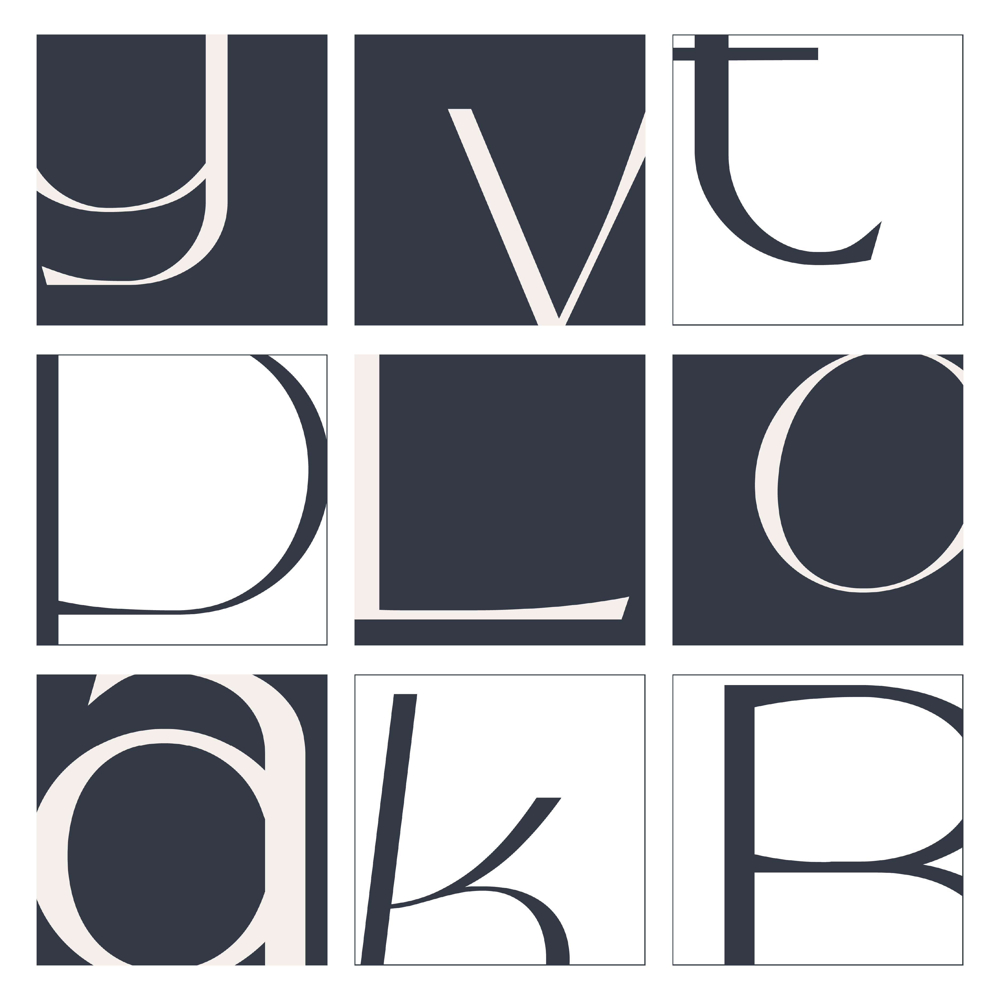
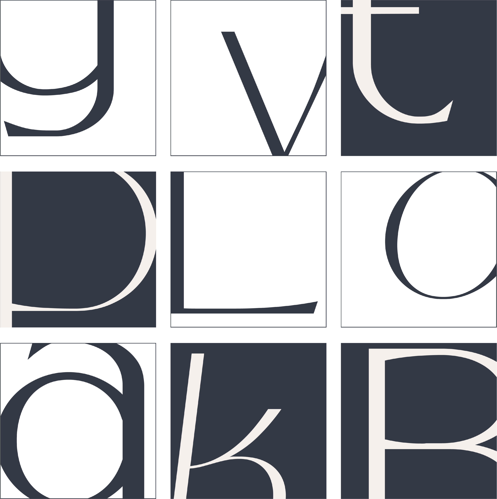
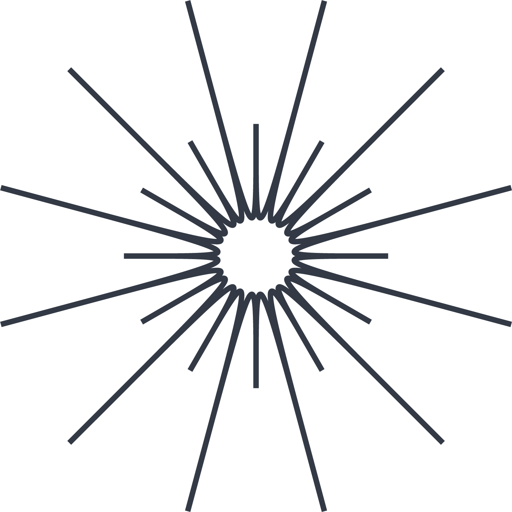

a new romantic typeface
Het lettertype die het dichtst in de buurt komt van het lettertype op de albumhoes van Umberto Tozzi's "In Concerto" is Crayond, gemaakt door Dora Typefoundry. Het omschreven wordt als een “new romantic typeface” en een evolutie van het originele ontwerp van Lovelace. Aan dit romantische font is een zogenaamde glitchy en vloeiende esthetiek toegevoegd van trans-moderne neo-brutalistische typografie. De typefoundry noemt Crayond ook een “evil sans serif” font, die geassocieerd wordt met ouderwetse lettervormen zoals die van letterontwerper Alexander Phemeister. Het font maakt ook gebruik van onverwachte calligrafische elementen, wat ik er erg interessant aan vind. Op deze manier wordt er een twist gegeven aan een strak en modern lettertype, en wordt deze gecombineerd met traditioneel schrift. Zo zijn de lijnen aan de zijkant vaak dikker dan die in het midden van de letter. Wat mij vooral aansprak aan het lettertype was de simpliciteit van de vormen en dat het er retro en tegelijkertijd chic en futuristisch uitziet. Ook is het lettertype erg dun, zelfs de Crayond Bold is nog erg licht. Dit kan op veel manieren interessante ontwerpen weergeven, zowel met grote titels als met kleinere tekst.
Het lettertype die het dichtst in de buurt komt van het lettertype op de albumhoes van Umberto Tozzi's "In Concerto" is Crayond, gemaakt door Dora Typefoundry. Het omschreven wordt als een “new romantic typeface” en een evolutie van het originele ontwerp van Lovelace. Aan dit romantische font is een zogenaamde glitchy en vloeiende esthetiek toegevoegd van trans-moderne neo-brutalistische typografie. De typefoundry noemt Crayond ook een “evil sans serif” font, die geassocieerd wordt met ouderwetse lettervormen zoals die van letterontwerper Alexander Phemeister. Het font maakt ook gebruik van onverwachte calligrafische elementen, wat ik er erg interessant aan vind. Op deze manier wordt er een twist gegeven aan een strak en modern lettertype, en wordt deze gecombineerd met traditioneel schrift. Zo zijn de lijnen aan de zijkant vaak dikker dan die in het midden van de letter. Wat mij vooral aansprak aan het lettertype was de simpliciteit van de vormen en dat het er retro en tegelijkertijd chic en futuristisch uitziet. Ook is het lettertype erg dun, zelfs de Crayond Bold is nog erg licht. Dit kan op veel manieren interessante ontwerpen weergeven, zowel met grote titels als met kleinere tekst.

COCKTAIL MENU
Aperol Spritz
Cosmopolitan
Negroni
Mimosa
Crayond's karakters
Uppercase and lowercase
Aa Bb Cc Dd Ee Ff Gg
Hh Ii Jj Kk Ll Mm Nn
Oo Pp Qq Rr Ss Tt Uu
Vv Ww Xx Yy Zz
Numbers
0 1 2 3 4 5 6 7 8 9
Special characters
! " # $ % & ' ( ) * + , - . / : ; <=> ? @ [ \ ] ^ _ ` { | } ~
New Romantic lettertypen vormen een intrigerende categorie binnen de wereld van typografie. Deze lettertypen stralen een unieke en betoverende esthetiek uit die nauw verbonden is met de New Romantic-beweging uit de jaren 80. De New Romantic-beweging ontstond als een reactie op de punkbeweging en omarmde een meer glamoureuze en elegante esthetiek. Deze esthetiek weerspiegelde zich ook in de lettertypen die in die tijd werden gebruikt. Deze lettertypen kunnen variëren van strak en gestileerd tot uitbundig en extravagant, maar ze delen allemaal een gemeenschappelijke focus op esthetiek en visuele impact. De veelzijdigheid van New Romantic lettertypen maakt ze geschikt voor verschillende toepassingen, van uitnodigingen en trouwkaarten tot posters, menukaarten, albumhoezen en andere creatieve projecten waarbij een vleugje romantiek en drama gewenst is. Ze kunnen een gevoel van nostalgie oproepen voor de gloriejaren van de New Romantic-beweging en tegelijkertijd een eigentijdse en artistieke uitstraling bieden.
Typ hier en probeer uit...
Crayond Light
Crayond Regular
Crayond Bold
Zoals je ziet is Crayond minder geschikt als bodytekst. Het nadeel van de sterk gestileerde letters is dat het in lopende tekst snel rommelig en lastig leesbaar wordt. Het is daarom aan te raden om een bijpassend font te gebruiken als secundair font, zoals bijvoorbeeld Work Sans, Gotham of Roboto.